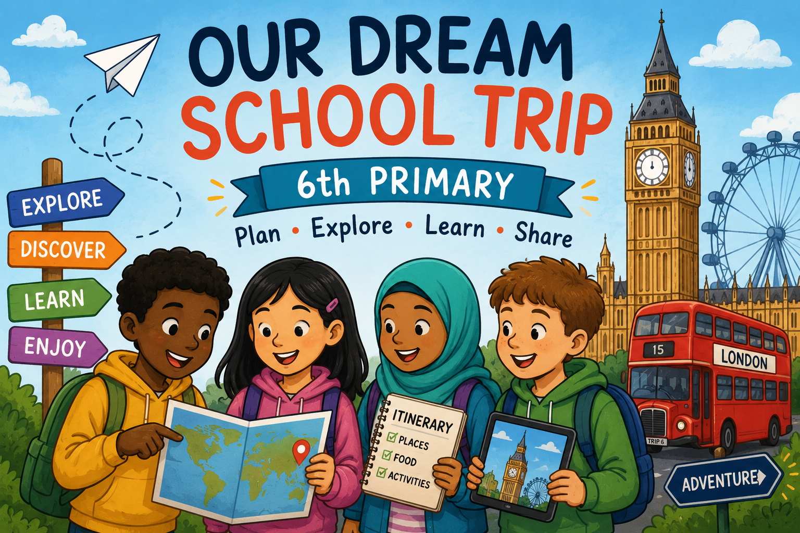

Este proyecto está dirigido al alumnado de 6.º de Primaria dentro del área de Inglés. A través de una propuesta práctica y cooperativa, los alumnos y alumnas planificarán su viaje escolar ideal utilizando el inglés como lengua de comunicación y diferentes herramientas digitales para buscar información, organizar sus ideas y presentar su propuesta final.
La propuesta combina el aprendizaje del idioma con el desarrollo de la competencia digital, el trabajo en equipo y la toma de decisiones compartida. Además, parte de una situación cercana y motivadora para el alumnado, ya que les permite imaginar, organizar y presentar un viaje relacionado con sus propios intereses mientras utilizan el inglés de forma significativa y en un contexto realista.
Durante las próximas sesiones os convertiréis en organizadores de vuestro propio viaje escolar ideal. Trabajaréis en pequeños grupos para planificar el destino, seleccionar lugares interesantes, organizar el itinerario y preparar vuestra propuesta utilizando el inglés y diferentes herramientas digitales.
¿Qué vais a hacer?
- Buscar información sobre destinos y lugares de interés.
- Practicar vocabulario relacionado con viajes, transporte y alojamiento.
- Organizar ideas y tomar decisiones en grupo.
- Planificar un itinerario y un presupuesto sencillo.
- Utilizar herramientas digitales para diseñar vuestra propuesta.
- Presentar vuestro viaje escolar al resto de la clase.
Producto final
Al final del proyecto, cada grupo presentará su propuesta de viaje escolar ideal en inglés. Para ello, crearéis un producto digital (folleto o presentación) donde incluiréis el destino elegido, actividades, transporte, alojamiento y la información más importante del viaje. Después, cada grupo compartirá su propuesta con el resto de la clase y explicará por qué considera que su viaje sería una buena opción.
👉 Enlace al Canva de la presentación del proyecto